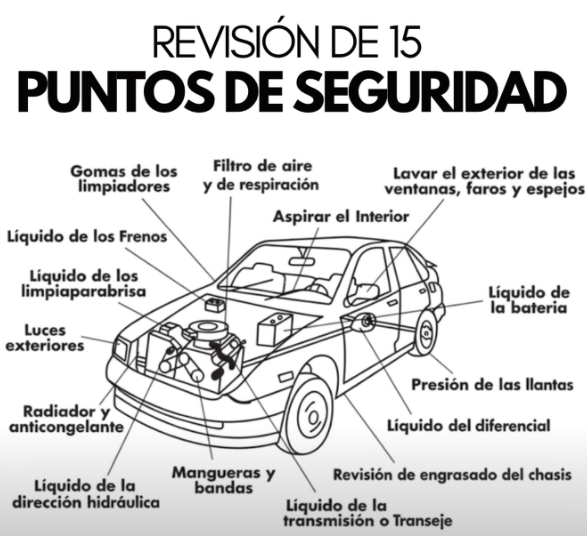

font-family: Arial, sans-serif;
Registro de inspección
Lista General de Sistemas del Auto, revisar en secuencia:

- Filtro de aire
- Limpieza exterior de las ventanas, faros y espejos
- Aspirar el interior
- Revisar nivel de líquido de la batería
- Revisar presión de los neumáticos
- Revisar nivel de aceite del diferencial
- Engrasado del chasis
- Revisar nivel de aciete de la transmisión
- Revisar estado de mangueras y bandas
- Revisar nivel de líquido de la dirección hidráulica
- Revisar nivel de anticongelante
- Revisar de luces exteriores
- Revisar líquido limpiaparabrisas
- Revisar líquido de frenos
Hallazgos
Se econtró nivel de sistema de frenos abajo del nivel crítico
Se encontró nivel de aceite de la transmisión faltante 1 litro
El resto de los sistemas se revisaron y se encuentran OK
"Revisión Completa" Se recuperó nivel de líquido de frenos y se adicionó 1 litro de aciete de transmisión.
Todo el sistema de seguridad ha sido verificado, el auto esta en condiciones de viajar